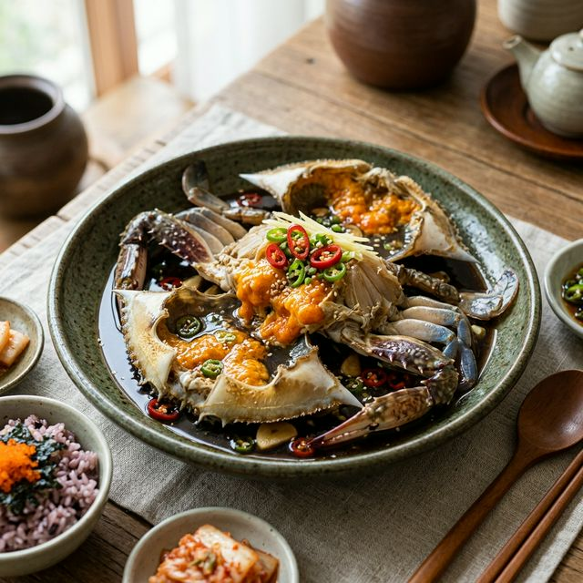
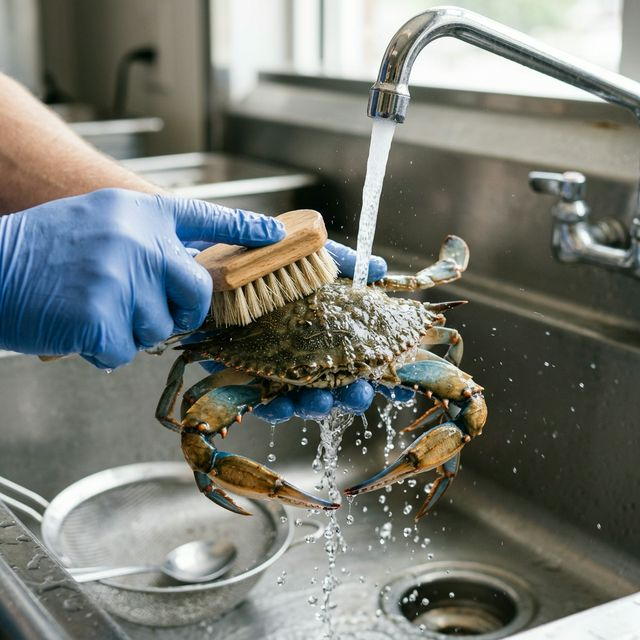

잘 담근 간장게장은 단순히 음식을 넘어 하나의 예술 작품과 같습니다. 특히 봄철 알이 꽉 찬 암게를 사용하여 담그는 게장은 미식가들 사이에서 보약만큼이나 귀한 대접을 받죠. 꽃게에 풍부한
타우린과 키토산은 기력 회복과 면역력 증진에 탁월한 효과가 있으며, 간장의 발효 성분이 더해져 소화 흡수를 돕기도 합니다.
오늘 소개할 레시피의 핵심은 '삼투압의 과학적 이용'입니다. 단순히 간장에 담그는 것이 아니라, 고유의 약재 육수를 통해 게의 살결 사이 사이로 감칠맛을 서서히 스며들게 하는 것이죠. 비린맛의 원인인
트라이메틸아민을 중화시키는 천연 재료들의 배합 비율을 지킨다면, 여러분의 식탁은 그 어떤 정식집보다 풍성하고 격조 있는 만찬장으로 변모할 것입니다. 이제껏 느껴보지 못한 깔끔하고 개운한 뒷맛의 게장,
그 찬란한 세계로 안내하겠습니다.

알이 꽉 찬 명품 비법 간장게장 완성작 / AI 제작 이미지
| 주재료 | 싱싱한 암꽃게 3~4마리 (약 1kg) |
|---|---|
| 부재료 | 청양고추 3개, 홍고추 2개, 레몬 1/2개, 대파 1대, 양파 1/2개 |
| 약재 육수 | 물 1.5L, 진간장 500ml, 청주 100ml, 맛술 100ml, 감초 3조각, 당귀 1조각, 대추 5알, 통마늘 10알, 통후추 10알, 마른 표고버섯 2개 |
짜지 않은 게장의 제1원칙은 간장과 물의 1:3 비율입니다. 하지만 단순히 물만 넣으면 깊은 맛이 부족하죠. 그래서 여기에 감초와 당귀 같은 약재를 넣어 은은한 단맛과
한방의 풍미를 더하는 것입니다. 설탕은 가급적 적게 사용하고 대신 배즙이나 사과즙을 1컵 추가하면 인위적이지 않은 고급스러운 단맛을 낼 수 있습니다.
여기에 청주와 맛술을 함께 사용하는 이유는 살균 효과와 더불어 연육 작용을 도와 게살을 더욱 탄력 있게 만들기 위함입니다. 끓이는 과정에서 알코올 성분은 날아가고 장의 풍미만 남게 되는데, 이 과정이
바로 명인들이 절대 외부에 공개하지 않는 맛의 핵심 포인트입니다.

비린내 제거를 위한 꼼꼼한 전처리 과정 / AI 제작 이미지
준비한 육수 재료(물, 간장, 약재 등)를 모두 냄비에 넣고 처음에는 강불로 끓입니다. 팔팔 끓기 시작하면 중약불로 줄여 약 40분에서 1시간 정도 성분이 충분히 우러나올
때까지 달여줍니다. 이때 뚜껑을 살짝 열어두면 혹시 모를 잡내 성분이 날아가는 데 도움이 됩니다.
육수가 충분히 달여지면 모든 건더기를 체로 걸러내고 순수한 육수액만 남깁니다. 여기서 가장 중요한 포인트는 육수를 완전히 식히는 것입니다. 미지근한 상태의 육수를 게에
부으면 게살이 익어버려 식감이 퍽퍽해지고 상하기 쉬워집니다. 얼음물에 중탕하거나 냉장고에서 최소 2시간 이상 충분히 차갑게 식혀주세요.
물기를 제거한 꽃게를 등딱지가 반드시 아래로(배가 위로) 향하게 통에 차곡차곡 담습니다. 그래야 게의 내장과 맛있는 장이 밖으로 흘러나오지 않고 소중하게 보존됩니다. 그
위로 슬라이스한 레몬, 양파, 대파, 그리고 매콤함을 더할 청양고추와 홍고추를 골고루 얹어줍니다.
준비된 차가운 육수를 게가 완전히 잠길 정도로 넉넉히 붓습니다. 레몬은 너무 오래 두면 쓴맛이 날 수 있으므로 반나절 정도 후에 건져내는 것도 좋은 팁입니다. 마지막으로 통후추 몇 알을 더 추가하면
더욱 깔끔한 향을 유지할 수 있습니다.
육수가 스며드는 마리네이드 과정 / AI 제작 이미지
담근 직후 바로 냉장고에 넣고 약 3일간의 1차 숙성을 거칩니다. 하루에 한 번씩 게의 위치를 위아래로 바꿔주면 양념이 더욱 고르게 뱁니다. 3일째 되는 날, 육수만 따로
따라내어 한 번 더 끓여준 뒤 다시 식혀서 붓는 과정을 거치면 보존 기간이 늘어나고 맛이 더욱 깊어집니다.
2차 숙성은 약 2일 정도가 적당하며, 이때부터가 가장 맛있는 시기입니다. 5일 이상 장기 보관할 경우에는 게만 따로 건져서 랩으로 개별 포장하여 냉동 보관하고, 육수는
따로 끓여 차갑게 냉장 보관했다가 먹기 직전에 부어 드시는 것이 최상의 품질을 유지하는 비결입니다.
혹시 감초나 당귀가 없다면? 설탕 대신 콜라 100ml를 넣어보세요. 콜라의 당분과 탄산 성분이 육질을 연하게 하고 누런 색감을 내어 전문적 느낌을 줍니다. 또한 비린내에
민감하신 분들은 육수를 끓일 때 소주나 월계수 잎을 2~3장 추가하는 것도 좋습니다.
게장을 다 먹고 남은 간장은 절대 버리지 마세요. 한 번 끓여서 병에 담아두면 만능 양념장이 됩니다. 달걀 장조림, 볶음밥의 베이스 소스, 혹은 마른 김을 찍어 먹는
용도로 사용하면 이미 게의 감칠맛이 녹아들어 있어 일반 간장과는 비교할 수 없는 깊은 맛을 냅니다.
간장게장은 단백질과 미네랄이 풍부하지만 나트륨 함량이 높을 수 있으므로 칼륨이 풍부한 채소(오이, 부추 등)와 함께 섭취하면 나트륨 배출에 도움이 됩니다. 따뜻한 흰
쌀밥은 기본이며, 김과 함께 싸 먹을 때 고소한 풍미가 극대화됩니다.
주류와 페어링할 때는 깔끔한 뒷맛의 전통 소주나 청주를 곁들이면 해산물 특유의 맛을 잡아주어 더욱 즐거운 식사가 됩니다. 후식으로는 입안을 개운하게 해주는 수정과나
생강차를 추천합니다.